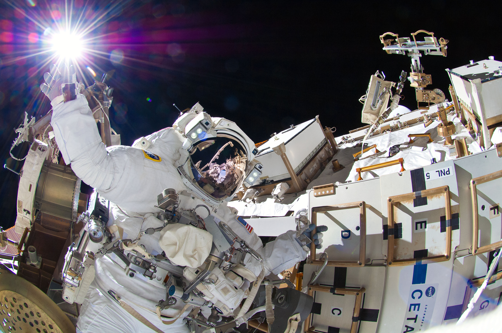

Never in all their history have men been able truly to conceive of the world as one: a single sphere, a globe, having the qualities of a globe, a round earth in which all the directions eventually meet, in which there is no center because every point, or none, is center — an equal earth which all men occupy as equals. The airman's earth, if free men make it, will be truly round: a globe in practice, not in theory.
We want to explore. We’re curious people. Look back over history, people have put their lives at stake to go out and explore … We believe in what we’re doing. Now it’s time to go.
As I stand out here in the wonders of the unknown at Hadley, I sort of realize there’s a fundamental truth to our nature, Man must explore . . . and this is exploration at its greatest.
Many say exploration is part of our destiny, but it’s actually our duty to future generations and their quest to ensure the survival of the human species.
For those who have seen the Earth from space, and for the hundreds and perhaps thousands more who will, the experience most certainly changes your perspective. The things that we share in our world are far more valuable than those which divide us.
When I orbited the Earth in a spaceship, I saw for the first time how beautiful our planet is. Mankind, let us preserve and increase this beauty, and not destroy it!
Many say exploration is part of our destiny, but it’s actually our duty to future generations and their quest to ensure the survival of the human species.
The dreams of yesterday are the hopes of today and the reality of tomorrow. Science has not yet mastered prophecy. We predict too much for the next year and yet far too little for the next ten.
Spaceflights cannot be stopped. This is not the work of any one man or even a group of men. It is a historical process which mankind is carrying out in accordance with the natural laws of human development.
The Earth was small, light blue, and so touchingly alone, our home that must be defended like a holy relic. The Earth was absolutely round. I believe I never knew what the word round meant until I saw Earth from space.
To go places and do things that have never been done before- That's what living is all about
Space, the final frontier. These are the voyages of the Starship Enterprise. Its five-year mission: to explore strange new worlds, to seek out new life and new civilizations, to boldly go where no man has gone before.
When I orbited the Earth in a spaceship, I saw for the first time how beautiful our planet is. Mankind, let us preserve and increase this beauty, and not destroy it!
Placehold text by Space Ipsum. Photographs by NASA